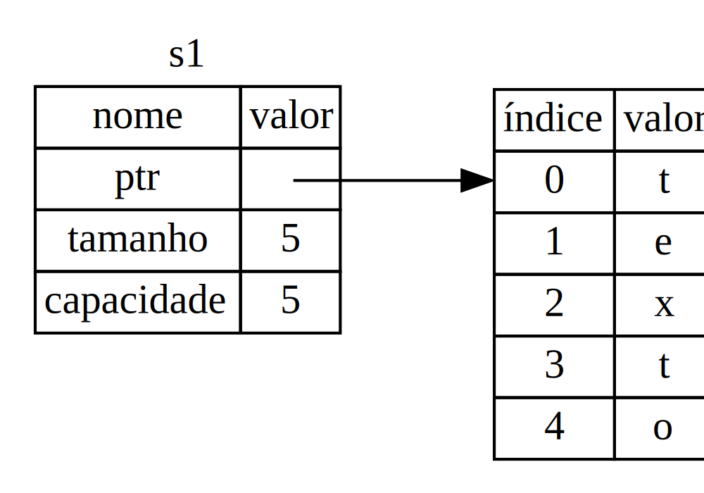
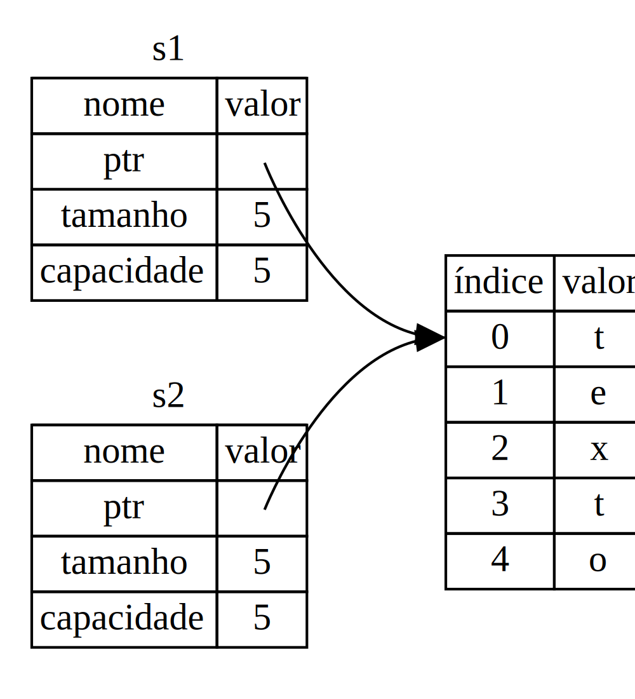
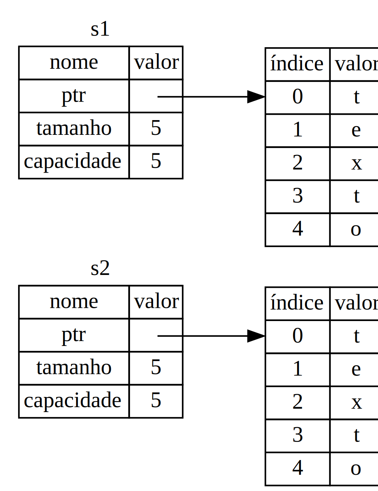
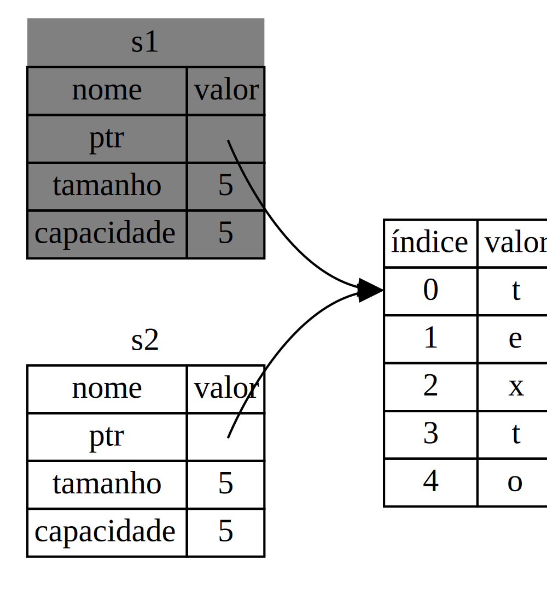

O Que É Ownership?
A característica central do Rust é ownership. Embora seja bem direta de explicar, ela tem implicações profundas em todo o resto da linguagem.
Todos os programas têm que decidir de que forma vão usar a memória do computador durante a execução. Algumas linguagens possuem garbage collection (coleta de lixo), que constantemente busca segmentos de memória que já não são mais utilizados enquanto o programa executa; em outras linguagens, o programador deve alocar e liberar memória de forma explícita. Rust usa uma terceira abordagem: a memória é gerenciada através de um sistema de posse, que tem um conjunto de regras verificadas em tempo de compilação. Nenhuma característica relacionada ao ownership implica qulaquer custo em tempo de execução.
Como ownership é um conceito novo para muitos programadores, leva um pouco de tempo para se acostumar. A boa notícia é que quanto mais experiente você se torna em Rust e nas regras do sistema de posse, mais você será capaz de escrever, naturalmente, código seguro e eficiente. Fique aí!
Quando você entender ownership, você terá uma fundação sólida para entender as características que fazem o Rust ser único. Neste capítulo, você vai aprender ownership trabalhando em alguns exemplos com foco em uma estrutura de dados muito comum: strings.
A Pilha e a Heap
Em muitas linguagens de programação, não temos que pensar muito sobre a pilha e sobre a heap. Mas em uma linguagem de programação de sistemas, como Rust, o fato de um valor estar na pilha ou na heap tem impacto na forma como a linguagem se comporta e no porquê de termos que tomar certas decisões. Vamos descrever partes do ownership em relação à pilha e à heap mais para a frente neste capítulo, então aqui vai uma explicação preparatória.
Tanto a pilha como a heap são partes da memória que estão disponíveis ao seu código para uso em tempo de execução, mas elas são estruturadas de formas diferentes. A pilha armazena valores na ordem em que eles chegam, e os remove na ordem inversa. Isto é chamado de last in, first out (último a chegar, primeiro a sair). Imagine uma pilha de pratos: quando você coloca mais pratos, você os põe em cima da pilha, e quando você precisa de um prato, você pega o que está no topo. Adicionar ou remover pratos do meio ou do fundo não funciona tão bem! Dizemos fazer um push na pilha quando nos refererimos a inserir dados, e fazer um pop da pilha quando nos referimos a remover dados.
A pilha é rápida por conta da forma como ela acessa os dados: ela nunca tem que procurar um lugar para colocar novos dados, ou um lugar de onde obter dados, este lugar é sempre o topo da pilha. Outra propriedade que faz a pilha ser rápida é que todos os dados contidos nela devem ocupar um tamanho fixo e conhecido.
Para dados com um tamanho desconhecido em tempo de compilação, ou com um tamanho que pode mudar, podemos usar a heap em vez da pilha. A heap é menos organizada: quando colocamos dados na heap, nós pedimos um certo espaço de memória. O sistema operacional encontra um espaço vazio em algum lugar na heap que seja grande o suficiente, marca este espaço como em uso, e nos retorna um ponteiro, que é o endereço deste local. Este processo é chamado de alocar na heap, e às vezes se abrevia esta frase como apenas "alocação". Colocar valores na pilha não é considerado uma alocação. Como o ponteiro tem um tamanho fixo e conhecido, podemos armazená-lo na pilha, mas quando queremos os dados, de fato, temos que seguir o ponteiro.
Imagine que você está sentado em um restaurante. Quando você entra, você diz o número de pessoas que estão com você, o atendente encontra uma mesa vazia que acomode todos e os leva para lá. Se alguém do seu grupo chegar mais tarde, poderá perguntar onde vocês estão para encontrá-los.
Acessar dados na heap é mais lento do que acessar dados na pilha, porque você precisa seguir um ponteiro para chegar lá. Processadores de hoje em dia são mais rápidos se não precisarem pular tanto de um lugar para outro na memória. Continuando com a analogia, considere um garçom no restaurante anotando os pedidos de várias mesas. É mais eficiente anotar todos os pedidos de uma única mesa antes de passar para a mesa seguinte. Anotar um pedido da mesa A, depois um da mesa B, depois outro da mesa A, e outro da mesa B novamente seria um processo bem mais lento. Da mesma forma, um processador pode cumprir melhor sua tarefa se trabalhar em dados que estão próximos uns dos outros (assim como estão na pilha) em vez de dados afastados entre si (como podem estar na heap). Alocar um espaço grande na heap também pode levar tempo.
Quando nosso código chama uma função, os valores passados para ela (incluindo possíveis ponteiros para dados na heap) e as variáveis locais da função são colocados na pilha. Quando a função termina, esses valores são removidos dela.
Rastrear quais partes do código estão usando quais dados na heap, minimizar a quantidade de dados duplicados na heap e limpar segmentos inutilizados da heap para que não fiquemos sem espaço são todos problemas tratados pelo ownership. Uma vez que você entende ownership, você não vai mais precisar pensar tanto sobre a pilha e a heap, mas saber que ownership existe para gerenciar os dados na heap pode ajudar a explicar como e por que ele funciona.
Regras de Ownership
Primeiro, vamos dar uma olhada nas regras de ownership. Mantenha em mente essas regras quando trabalharmos com os exemplos em seguida:
- Cada valor em Rust possui uma variável que é dita seu owner (sua dona).
- Pode apenas haver um owner por vez.
- Quando o owner sai fora de escopo, o valor será destruído.
Escopo de Variáveis
Já analisamos um exemplo de programa em Rust no Capítulo 2. Agora que já
passamos da sintaxe básica, não vamos incluir o código fn main() { nos
próximos exemplos, então se você estiver acompanhando, terá que colocá-los
manualmente dentro de uma função main. Como resultado, nossos exemplos serão
um pouco mais concisos, mantendo o foco nos detalhes que realmente interessam.
Como um primeiro exemplo de ownership, vamos olhar para o escopo de algumas variáveis. Um escopo é a área dentro de um programa para a qual um item é válido. Digamos que nós temos uma variável como esta:
# #![allow(unused_variables)] #fn main() { let s = "olá"; #}
A variável s se refere a uma string literal cujo valor é fixo no código. A
variável é válida do ponto em que é declarada até o fim do atual escopo. A
Listagem 4-1 tem comentários indicando onde a variável s é válida:
# #![allow(unused_variables)] #fn main() { { // s não é válida aqui, ainda não está declarada let s = "texto"; // s é válida deste ponto em diante // faz alguma coisa com s } // agora este escopo terminou, e s não é mais válida #}
Listagem 4-1: Uma variável e o escopo em que ela é válida.
Em outras palavras, existem dois pontos no tempo que são importantes aqui:
- Quando
sentra no escopo, ela é válida. - Permanece dessa maneira até que ela saia de escopo.
Neste ponto, a relação entre escopos e quando variáveis são válidas é similar a
outras linguagens de programação. Agora vamos construir sobre este entendimento,
apresentando o tipo String.
O Tipo String
Para ilustrar as regras de ownership, precisamos de um tipo de dados que seja mais complexo do que aqueles abordados no Capítulo 3. Os tipos abordados na seção "Tipos de Dados" são todos armazenados na pilha, e retirados dela quando seu escopo termina, mas queremos ver dados que são armazenados na heap e explorar como o Rust faz para saber quando limpar esses dados.
Vamos usar String como exemplo aqui, e concentrar nas partes de String que
estão relacionadas ao ownership. Esses aspectos também se aplicam aos outros
tipos complexos de dados fornecidos pela biblioteca padrão e os que você mesmo
cria. Vamos discutir String mais a fundo no Capítulo 8.
Já vimos strings literais, em que um valor de string é fixado pelo código do
nosso programa. Strings literais são convenientes, mas nem sempre são adequadas
para situações em que queremos usar texto. Um motivo é que elas são imutáveis.
Outro é que nem todos os valores de string são conhecidos enquanto escrevemos
nosso código: por exemplo, o que fazer se queremos obter uma entrada do usuário
e armazená-la? Para essas situações, Rust tem um segundo tipo de strings,
String. Este tipo é alocado na heap, e como tal, é capaz de armazenar uma
quantidade de texto que é desconhecida em tempo de compilação. Você pode criar
uma String de uma string literal usando a função from, da seguinte forma:
# #![allow(unused_variables)] #fn main() { let s = String::from("texto"); #}
O :: é um operador que nos permite indicar que o namespace desta função
from, em particular, é o tipo String, de forma que não precisamos usar um
nome específico como string_from. Vamos discutir esta sintaxe na seção
"Sintaxe do Método" do Capítulo 5, e quando falarmos sobre namespaces com
módulos no Capítulo 7.
Este tipo de string pode ser alterada:
# #![allow(unused_variables)] #fn main() { let mut s = String::from("olá"); s.push_str(", mundo!"); // push_str() adiciona um literal à String println!("{}", s); // Isso vai exibir `olá, mundo!` #}
Mas então, qual é a diferença aqui? Por que String pode ser alterada enquanto
literais não podem? A diferença está em como esses dois tipos lidam com memória.
Memória e Alocação
No caso de uma string literal, sabemos o seu conteúdo em tempo de compilação, então o texto é injetado diretamente para dentro do executável final, o que faz strings literais serem rápidas e eficientes. Mas essas propriedades provêm apenas da sua imutabilidade. Infelizmente, não podemos colocar um segmento de memória dentro do binário para cada texto cujo tamanho é desconhecido em tempo de compilação, e cujo tamanho pode mudar ao longo da execução do programa.
Com o tipo String, para poder acomodar um trecho mutável e expansível de
texto, precisamos alocar uma quantidade de memória na heap, que é desconhecida
em tempo de compilação, para manter o seu conteúdo. Isto significa que:
- A memória deve ser solicitada ao sistema operacional em tempo de execução.
- Precisamos de uma forma de retornar esta memória ao sistema operacional
quando tivermos finalizado nossa
String.
A primeira parte é feita por nós: quando chamamos String::from, sua
implementação solicita a memória de que precisa. Isso é meio que universal em
linguagens de programação.
No entanto, a segunda parte é diferente. Em linguagnes com um garbage collector
(GC), o GC rastreia e limpa a memória que não está mais sendo usada, e nós,
como programadores, não precisamos pensar sobre isso. Sem um GC, é
resposabilidade do programador identificar quando a memória não está mais sendo
usada e chamar, explicitamente, um código que a retorne, assim como fizemos para
solicitá-la. Fazer isso corretamente tem sido, historicamente, um problema
difícil de programação. Se esquecermos, vamos desperdiçar memória. Se fizermos
cedo demais, teremos uma variável inválida. Se fizermos duas vezes, também será
um bug. Precisamos casar exatamente um allocate (alocar) com exatamente um
free (liberar).
Rust segue um caminho diferente: a memória é automaticamente retornada assim que
a variável que a possui sai de escopo. Aqui está uma versão do nosso exemplo de
escopo da Listagem 4-1 usando uma String em vez de uma string literal:
# #![allow(unused_variables)] #fn main() { { let s = String::from("texto"); // s é válida deste ponto em diante // faz alguma coisa com s } // agora este escopo terminou, e s não é // mais válida #}
Existe um ponto natural em que podemos retornar ao sistema operacional a memória
da qual precisa nossa String: quando s sai de escopo. Quando uma variável
sai de escopo, o Rust chama para nós uma função especial. Essa função é chamada
drop, e é aí que o autor de String pode colocar o código que retorna
a memória. Rust chama drop automaticamente ao fechar chaves (}).
Nota: Em C++, esta forma de desalocar recursos no fim do tempo de vida útil de um item às vezes é chamado de Resource Acquisition Is Initialization (RAII, do inglês, Aquisição de Recurso É Inicialização). A função
dropem Rust vai lhe ser bastante familar se você já tiver usado padrões RAII.
Este padrão tem um profundo impacto na forma de escrever código em Rust. Pode parecer simples agora, mas o comportamento do código pode ser inesperado em situações mais complicadas, quando queremos que múltiplas variáveis usem os dados que alocamos na heap. Vamos explorar algumas dessas situações agora.
Formas de Interação Entre Variáveis e Dados: Move
Múltiplas variáveis podem interagir com os mesmos dados de diferentes formas em Rust. Vamos ver um exemplo usando um número inteiro na Listagem 4-2:
# #![allow(unused_variables)] #fn main() { let x = 5; let y = x; #}
Listagem 4-2: Atribuindo o valor inteiro da variável x
para y.
Provavelmente podemos advinhar o que isto faz com base nas nossas experiências
com outras linguagens: "Associe o valor 5 a x; depois faça uma cópia do
valor em x e a associe a y." Agora temos duas variáveis, x e y, e ambas
são iguais a 5. É isto mesmo que acontece, porque números inteiros são valores
simples que possuem um tamanho fixo e conhecido, e esses dois valores 5 são
colocados na pilha.
Agora vamos ver a versão usando String:
# #![allow(unused_variables)] #fn main() { let s1 = String::from("texto"); let s2 = s1; #}
Isso parece bem similar ao código anterior, então poderíamos assumir que
funcionaria da mesma forma, isto é, a segunda linha faria uma cópia do valor em
s1 e a associaria a s2. Mas não é exatamente isso que acontece.
Para explicar isso mais detalhadamente, vamos ver como a String funciona por
baixo dos panos na Figura 4-1. Uma String é feita de três partes, mostradas
à esquerda: um ponteiro para a memória que guarda o conteúdo da string, um
tamanho, e uma capacidade. Este grupo de dados é armazenado na pilha. No lado
direito está a memória na heap que guarda o conteúdo.

Figura 4-1: Representação na memória de uma String
contendo o valor "texto" associado a s1.
O tamanho representa quanta memória, em bytes, o conteúdo da String está
usando atualmente. A capacidade é a quantidade total de memória, em bytes, que
a String recebeu do sistema operacional. A diferença entre tamanho e
capacidade é importante, mas não neste contexto, então não há problema em
ignorar a capacidade por enquanto.
Quando atribuímos s1 a s2, os dados da String são copiados, o que
significa que estamos copiando o ponteiro, o tamanho e a capacidade que estão na
pilha. Não estamos copiando os dados que estão na heap, aos quais o ponteiro se
refere. Em outras palavras, a representação dos dados na memória ocorre como
na Figura 4-2.

Figura 4-2: Representação na memória da variável s2, que
tem uma cópia do ponteiro, tamanho e capacidade de s1.
A representação não ocorre como na Figura 4-3, que é como ficaria a memória se
o Rust também copiasse os dados da heap. Se o Rust fizesse isso, a operação
s2 = s1 seria potencialmente bastante custosa em termos de desempenho em tempo
de execução caso os dados na heap fossem grandes.

Figura 4-3: Outra possibilidade do que s2 = s1 poderia
fazer se o Rust também copiasse os dados da heap.
Anteriormente, dissemos que, quando uma variável sai de escopo, o Rust
automaticamente chama a função drop e limpa a memória da heap para esta
variável. Mas a Figura 4-2 mostra que os dois ponteiros estão apontando para o
mesmo lugar. Isso é um problema: quando s2 e s1 saem de escopo, os dois vão
tentar liberar a mesma memória. Isso é conhecido como erro de double free
(liberação dupla), e é um dos bugs de segurança de memória que mencionamos
anteriormente. Liberar memória duas vezes pode levar à corrupção da memória,
o que pode, por sua vez, trazer potenciais vulnerabilidades de segurança.
Para garantir a segurança de memória, há um outro detalhe sobre o que acontece
nesta situação em Rust. Em vez de tentar copiar a memória alocada, o Rust
considera que s1 deixa de ser válida, e portanto, o Rust não precisa liberar
nenhuma memória quando s1 sai de escopo. Veja só o que acontece quando você
tenta usar s1 depois que s2 é criada, não vai funcionar:
let s1 = String::from("texto");
let s2 = s1;
println!("{}", s1);
Você vai ter um erro como este, porque o Rust lhe impede de usar a referência que foi invalidada:
error[E0382]: use of moved value: `s1`
--> src/main.rs:5:20
|
3 | let s2 = s1;
| -- value moved here
4 |
5 | println!("{}", s1);
| ^^ value used here after move
|
= note: move occurs because `s1` has type `std::string::String`, which does
not implement the `Copy` trait
Se você já ouviu os termos "cópia rasa" e "cópia profunda" (shallow copy e
deep copy) enquanto trabalhava com outras linguagens, o conceito de copiar o
ponteiro, tamanho e capacidade sem copiar os dados provavelmente parece uma
cópia rasa. Mas como o Rust também invalida a primeira variável, em vez de
chamar isto de cópia rasa, isto é conhecido como um move. Aqui poderíamos
dizer que s1 foi movida para s2. Então, o que realmente acontece é
mostrado na Figura 4-4.

Figura 4-4: Representação na memória depois de s1 ter
sido invalidada.
Isso resolve o nosso problema! Tendo apenas s2 válida, quando ela sair de
escopo, somente ela vai liberar a memória, e pronto.
Ademais, isto implica uma decisão de projeto: Rust nunca vai criar deep copies dos seus dados. Logo, para qualquer cópia automática que aconteça, pode-se assumir que ela não será custosa em termos de desempenho em tempo de execução.
Formas de Interação Entre Variáveis e Dados: Clone
Se nós queremos fazer uma cópia profunda dos dados da String que estão na
heap, e não apenas os dados que estão na pilha, podemos usar um método comum
chamado clone. Vamos discutir sintaxe de métodos no Capítulo 5, mas como os
métodos constituem uma característica comum em várias linguagens de programação,
você provavelmente já os viu antes.
Aqui está um exemplo de uso do método clone:
# #![allow(unused_variables)] #fn main() { let s1 = String::from("texto"); let s2 = s1.clone(); println!("s1 = {}, s2 = {}", s1, s2); #}
Isto funciona bem, e é assim que você pode, explicitamente, produzir o comportamento mostrado na Figura 4-3, onde os dados da heap são copiados.
Quando você ver uma chamada para clone, você sabe que algum código arbitrário
está sendo executado, e que este código talvez seja custoso. É um indicador
visual de que algo diferente está acontecendo.
Dados Somente da Pilha: Copy
Há um outro detalhezinho de que ainda não falamos. Este código usando números inteiros, parte do qual foi mostrado anteriormente na Listagem 4-2, funciona e é válido:
# #![allow(unused_variables)] #fn main() { let x = 5; let y = x; println!("x = {}, y = {}", x, y); #}
Mas este código parece contradizer o que acabamos de aprender: não temos uma
chamada ao método clone, mas x ainda é válido e não foi movido para y.
O motivo é que tipos como números inteiros têm um tamanho conhecido em tempo de
compilação e são armazenados inteiramente na pilha, e por isso, cópias desses
valores são rápidas de se fazer. Isso significa que não há razão para impedir
x de ser válido após criarmos a variável y. Em outras palavras, não há
diferença entre cópia rasa e profunda aqui, então chamar o método clone não
faria nada diferente de uma cópia rasa, por isso podemos deixá-lo de lado.
O Rust tem uma anotação especial chamada de trait Copy, que podemos colocar
em tipos como números inteiros, que são armazenados na pilha (falaremos mais
sobre traits no Capítulo 10). Se um tipo possui o trait Copy, uma variável
anterior vai continuar sendo utilizável depois de uma atribuição. O Rust não vai
nos deixar anotar um tipo com o trait Copy se este tipo, ou qualquer uma de
suas partes, tiver implementado o trait Drop. Se o tipo precisa que algo
especial aconteça quando o valor sair de escopo e há uma anotação Copy neste
tipo, vamos ter um erro de compilação. Para aprender sobre como inserir a
anotação Copy ao seu tipo, veja o Apêndice C em Traits Deriváveis.
Então quais tipos são Copy? Você pode verificar a documentação de um
determinado tipo para se certificar, mas como regra geral, qualquer grupo de
valores simples escalares podem ser Copy, e nada que precise de alocação ou
que seja uma forma de recurso é Copy. Aqui estão alguns tipos que são Copy:
- Todos os tipos inteiros, como
u32. - O tipo booleano,
bool, com valorestrueefalse. - O tipo caractere,
char. - Todos os tipos de ponto flutuante, como
f64. - Tuplas, mas apenas aquelas que contém tipos que também são
Copy.(i32, i32)éCopy, mas(i32, String)não.
Ownership e Funções
A semântica para passar um valor a uma função é similar à de atribuir um valor a uma variável. Passar uma variável a uma função irá mover ou copiar, assim como acontece em uma atribuição. A Listagem 4-3 tem um exemplo com algumas anotações mostrando onde as variáveis entram e saem de escopo:
Arquivo: src/main.rs
fn main() { let s = String::from("texto"); // s entra em escopo. toma_posse(s); // move o valor de s para dentro da função... // ... e ele não é mais válido aqui. let x = 5; // x entra em escopo. faz_uma_copia(x); // x seria movido para dentro da função, // mas i32 é Copy, então está tudo bem em // usar x daqui para a frente. } // Aqui, x sai de escopo, e depois s. Mas como o valor de s foi movido, nada // de especial acontece. fn toma_posse(uma_string: String) { // uma_string entra em escopo. println!("{}", uma_string); } // Aqui, uma_string sai de escopo, e o método `drop` é chamado. A memória que // guarda seus dados é liberada. fn faz_uma_copia(um_inteiro: i32) { // um_inteiro entra em escopo. println!("{}", um_inteiro); } // Aqui, um_inteiro sai de escopo. Nada de especial acontece.
Listagem 4-3: Funções com anotações de ownership e escopo
Se tentássemos usar s após a chamada para toma_posse, o Rust iria lançar um
erro de compilação. Essas verificações estáticas nos protegem de certo enganos.
Tente adicionar um código à função main que usa s e x para ver onde você
pode usá-los e onde as regras de ownership lhe impedem de fazê-lo.
Retorno de Valores e Escopo
Retornar valores também pode transferir a posse de um valor. Aqui está um exemplo com anotações similares àquelas da Listagem 4-3:
Arquivo: src/main.rs
fn main() { let s1 = entrega_valor(); // entrega_valor move o valor retornado // para s1. let s2 = String::from("texto"); // s2 entra em escopo. let s3 = pega_e_entrega_valor(s2); // s2 é movido para dentro da função // pega_e_entrega_valor, que também // move o valor retornado para s3. } // Aqui, s3 sai de escopo e é destruída. s2 sai de escopo, mas já foi movida, // então nada demais acontece. s1 sai de escopo e é destruída. fn entrega_valor() -> String { // entrega_valor move o valor // retornado para dentro da função // que a chamou. let uma_string = String::from("olá"); // uma_string entra em escopo. uma_string // uma_string é retornada e movida // para a função que chamou // entrega_valor. } // pega_e_entrega_valor vai pegar uma String e retorná-la. fn pega_e_entrega_valor(uma_string: String) -> String { // uma_string entra em // escopo. uma_string // uma_string é retornada e movida para a função que chamou // pega_e_entrega_valor. }
A posse de uma variável segue o mesmo padrão toda vez: atribuir um valor a outra
variável irá movê-lo. Quando uma variável que inclui dados na heap sai de
escopo, o valor será destruído pelo método drop, a não ser que os dados tenham
sido movidos para outra variável.
Obter e retornar a posse de um valor em cada função é um pouco tedioso. O que fazer se queremos deixar uma função usar um valor sem tomar posse dele? É meio irritante saber que qualquer coisa que passemos a uma função também precisa ser passado de volta se quisermos usá-lo novamente, além de algum possível resultado proveniente do corpo da função que também queremos retornar.
É possível retornar múltiplos valores usando uma tupla, da seguinte forma:
Arquivo: src/main.rs
fn main() { let s1 = String::from("texto"); let (s2, tamanho) = calcula_tamanho(s1); println!("O tamanho de '{}' é {}.", s2, tamanho); } fn calcula_tamanho(s: String) -> (String, usize) { let tamanho = s.len(); // len() retorna o tamanho de uma String. (s, tamanho) }
Mas isto é muita cerimônia e trabalho para um conceito que deveria ser comum. Para nossa sorte, Rust tem uma ferramenta para este conceito, e ela é chamada de referências.